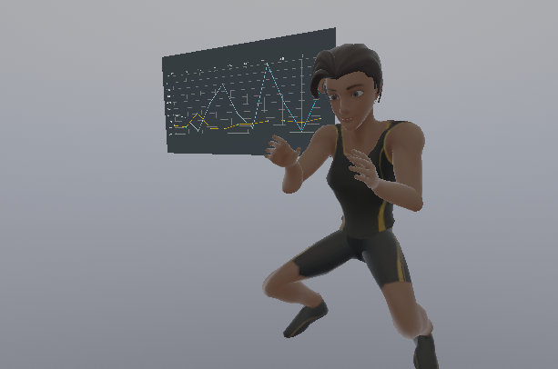

VR Motion Capture Pipeline
OptiTrack integration, calibration, and record and replay tooling for XR research, Augmented Perception Lab
Over the summer, I built a motion capture pipeline at the Augmented Perception Lab at CMU to support XR interaction research. I integrated an OptiTrack motion catpure system into Unity, solved the coordinate alignment problem between the two, and built a record and replay framework so researchers could capture and reproduce motion capture sessions for analysis.
In the fall, I used that same pipeline as the foundation for an applied prototype: a VR fitness trainer that plays back a pre-recorded trainer avatar, tracks a user's body in real time, and compares the two so the user can see how closely their form matches the trainer's. We presented the prototype to a footwear company interested in its applications for sports training and interactive fitness.
Integrating OptiTrack into Unity meant reconciling two systems that do not share a coordinate space. I set up the OptiTrack plugin and Motive software with a mocap suit, then implemented a three point calibration method using 4x4 transformation matrices to align OptiTrack's tracked space with Unity's world space. This let motion data collected on the mocap system map correctly onto the XR environment the user was actually standing in.
Once calibration was working, I built a system to log transformation data from OptiTrack skeletons, Meta Quest VR hands, and interactive objects like a test keypad, all into CSV files. To reconstruct a session for playback, I parsed those CSVs back into Unity using regular expressions, so a researcher could record a session once and replay it exactly for analysis. This same framework is what later let me capture the trainer avatar's performance for the fitness trainer prototype.
During the fall semester, I built a prototype on top of the motion capture pipeline: a fitness trainer that plays back a pre-recorded trainer avatar captured through the record and replay framework, while tracking the live user through a MediaPipe 3D pose tracking plugin instead of the mocap suit since the goal here was something a user could actually use without lab equipment. Each frame, the system reads the trainer avatar's joint rotations, estimates equivalent rotation values from the user's MediaPipe joint positions, and computes the difference between the two, which gets plotted in real time so the user can see how closely their motion tracks the trainer's. Users can also rotate the trainer avatar freely and choose which joints they want to focus on.
Implementation Note: MediaPipe outputs joint positions, not rotations, while the trainer avatar's motion is defined by joint rotations. Comparing the two meaningfully required converting estimated MediaPipe joint positions into rotation values first, rather than comparing positions and rotations directly.
